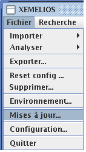
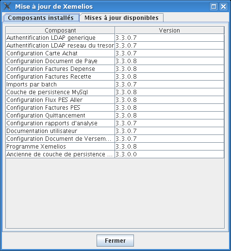
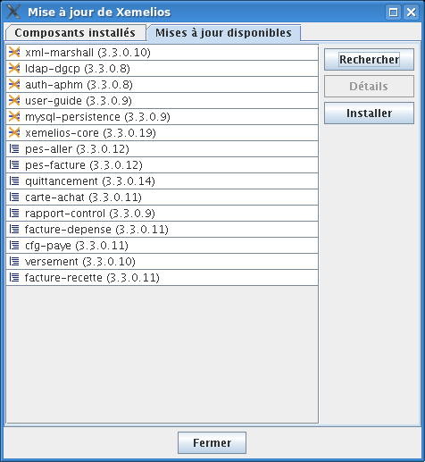
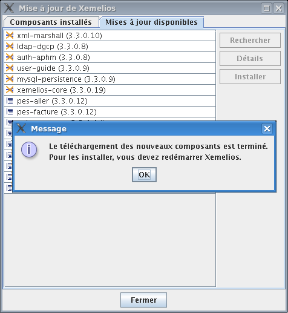

Mises à jour de XéMélios
Il existe deux manières de mettre à jour XéMéLios : soit par le site de mise à jour en ligne, soit par le téléchargement d'un nouveau programme d'installation.
Les mises à jour en ligne se font depuis Xemelios. On y accède par le menu Fichier / Mises à jour...
C'est le moyen le plus rapide et le plus sûr de profiter des toutes dernières mises à jour de XéMéLios.

La boite de mises à jour s'ouvre et présente les composants de XéMéLios déjà installés :

Il faut ensuite aller dans l'onglet Mises à jour disponibles et cliquer sur Rechercher pour visualiser les mises à jour disponibles sur le serveur :

Cliquer ensuite sur Installer pour lancer le téléchargement des composants.
A l'issue du téléchargement, XéMéLios avertit qu'il faut relancer XéMéLios.

La mise à jour par programme d'installation consiste à télécharger une version plus récente du programme d'installation et de procéder à l'installation, comme indiqué dans la documentation d'installation. Ce mode de mise à jour n'est à utiliser que pour les postes n'ayant pas d'accès à internet, ou pour les mises à jour majeures, ou pour les utilisateurs experts.
Dans une installation client/serveur, il est impératif que tous les postes clients soient installés avec la même version de XéMéLios.
Il est fortement recommandé de commencer par mettre à jour le poste faisant office de serveur, certaines mises à nécessitant de mettre à jour la base de données localement.